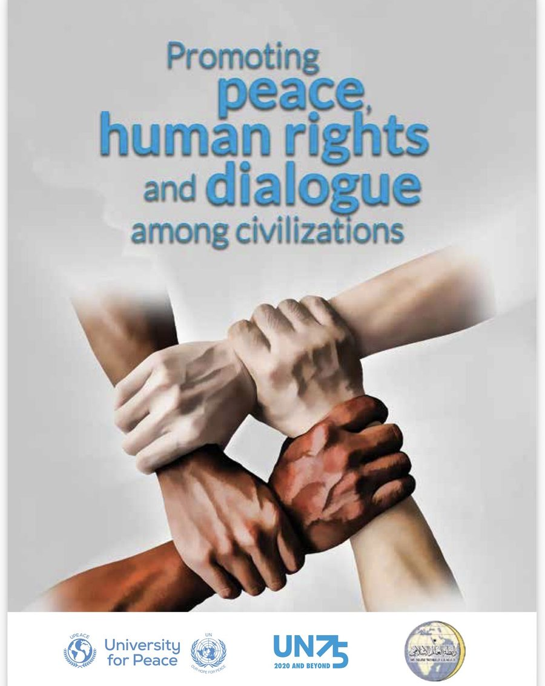
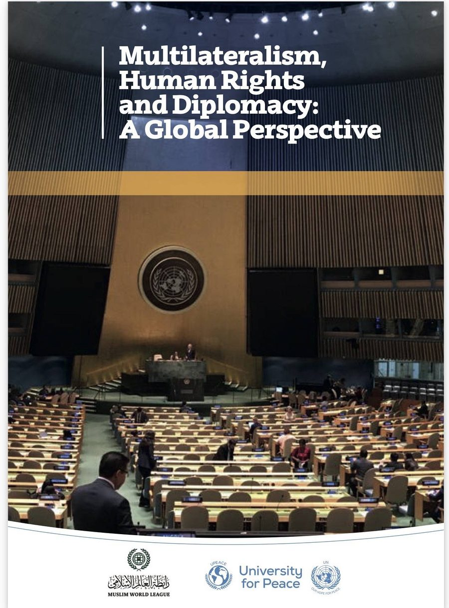

Promoting Peace, Human Rights and Dialogue among Civilizations
University for Peace · UN75 · Muslim World League
Draft Design for review — not published. Content still being confirmed.
Skip to contentWriting & interviews
Books

University for Peace · UN75 · Muslim World League

Muslim World League · University for Peace · United Nations
Essays
Written for The National between 2008 and 2009, and published here in full. Several of them argued for reforms that arrived years later.
Written sixteen years before the UAE's insolvency framework was rebuilt: why a country that wants to be a financial centre needs a rescue culture, not a stigma.
On the fortieth anniversary years of a young federation — what it takes to build a nation on vision and trust, and what the UAE has to teach about growth.
Employment, the private sector and the limits of what government can be asked to carry.
Written in the teeth of the financial crisis, on what a generation entering the workforce needed from the institutions around it.
An early statement of an argument she has made ever since: parity is a governance and economic question, not a social courtesy.
On reading, education and the long work of building a literate society.
Interviews & press
The International Wire · interview by Danish Shaikh
The Guardian · Public Leaders Network
The Legal 500 · GC Magazine
Corporate Counsel Now
Arabian Business
Entrepreneur Middle East
Al Shindagah
McKinsey & Company · cited alongside Christine Lagarde
30% Club
British Chamber Dubai